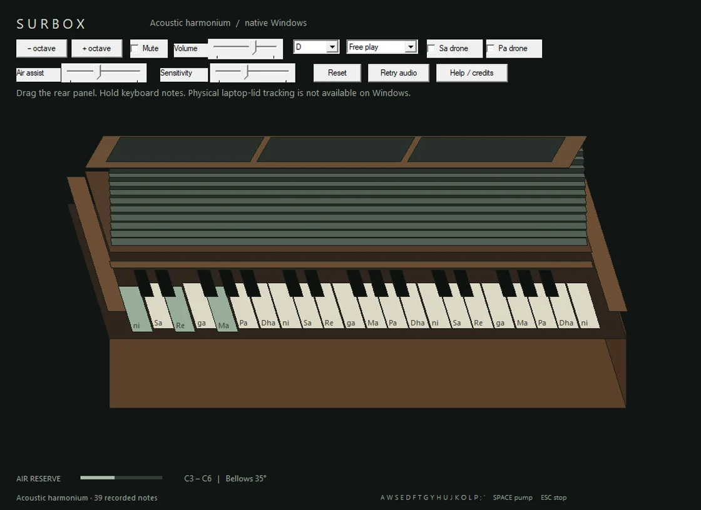
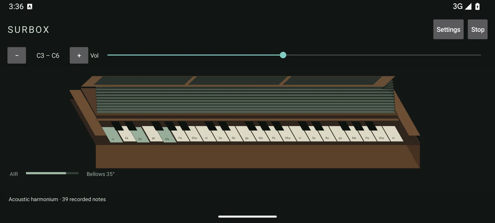

macOS
Apple Silicon · macOS 14+
SwiftUI, SceneKit and native audio. Optional physical lid input only when a compatible MacBook sensor is exposed.
Download Mac ZIPAd-hoc signed, not notarized. Intel binary not provided.An instrument for your everyday device
Play an Indian harmonium with tactile keys, folding bellows and acoustic reed recordings. Native apps for macOS, Windows and Android. Yours to play offline.
Offline native apps · No account required · Engineering previews

Your system. Your instrument.
Choose the version for your device. All three downloads include the acoustic recordings.
Apple Silicon · macOS 14+
SwiftUI, SceneKit and native audio. Optional physical lid input only when a compatible MacBook sensor is exposed.
Download Mac ZIPAd-hoc signed, not notarized. Intel binary not provided.Windows 10 / 11 · x64
Native Win32 app with hinged perspective bellows, keyboard chords, mouse glissando and the same acoustic recordings.
Download Windows ZIPExtract the entire ZIP, then run SurBox.exe. Unsigned; SmartScreen may warn. Windows runner tested; physical audio hardware review remains.Android 8.0+ · Universal APK
Native touch instrument with two-finger chords and independently draggable bellows. Landscape layout for wider keys.
Download Android APKDirect signed APK, not a Play Store listing. Allow installation from your browser only if you trust the download. Android 15 emulator tested; physical-device review remains.Windows and Android use pointer/touch pumping, not physical screen-flapping sensors. iPhone, Linux and Windows ARM-native packages are not included. Platform verification & limits · Verify checksums


Drag the hinged bellows to charge an air reserve. Opening and closing feed the reeds; adjustable air assist makes it easy to begin.
Play chords with your computer keyboard or multiple fingers, glide over the on-screen keys, choose a tonic, and add Sa or Pa drones.
39 notes derived from Donya Quick’s CC0 acoustic harmonium recording. Local playback, smooth loops and a clearly labeled fallback.
Before you download
Only on macOS if your Mac exposes a compatible continuous lid-angle sensor. SurBox checks the hardware and shows the actual status. The 2020 M1 MacBook Air does not expose that sensor; its open/closed switch cannot measure flapping. Windows and Android do not implement physical lid tracking.
macOS lid integration has been tested with injected readings. Actual hand-moved tracking on a compatible Mac remains unverified. Move any supported screen gently; never force the hinge. Normal lid-close sleep stays enabled.
Choose Apple Silicon macOS 14+, Windows 10/11 x64, or Android 8.0+. Android is a signed universal APK with no native-ABI dependency. Windows is a portable ZIP: keep its samples folder beside SurBox.exe. macOS Intel, iOS, Linux and Windows ARM-native builds are not supplied. No account, internet connection, microphone access or paid API is required to play.
This is a locally ad-hoc-signed engineering preview, not a Developer ID-signed or notarized release. A downloaded copy may be blocked by Gatekeeper. Review the source and release details first; use Apple’s normal approval flow only if you trust the download. Do not disable system security globally.
On Windows, download and extract the entire ZIP, then open SurBox.exe. It is not Authenticode-signed, so SmartScreen may warn. On Android, download the APK and use the system installer. Android may request permission for your browser to install apps from this source. Approve only if you trust this download, then turn that permission off again. There is no Play Store listing and no iOS APK support. Never disable device security globally.
On desktop, unzip and open SurBox, then click the instrument. Use A W S E D F T G Y H U J K O L P ; ' for chromatic notes, hold Space to pump, and press Escape to release all notes. On Android, install the APK, rotate to landscape, and touch keys with multiple fingers while another finger drags the bellows. Air assist is on by default.
The macOS build passed 16 deterministic groups and 53 primary native checks. Windows was built with MSVC on a Windows runner and passed 13 native UI checks plus sample/DSP tests. Android passed 19 emulator instrument checks, including multitouch, AudioTrack progress and no Internet permission. Human listening, physical-device latency, device hot-plug and assistive-technology acceptance remain open.
No accounts. No cloud audio. Just your instrument.
Release notes · Download checksums